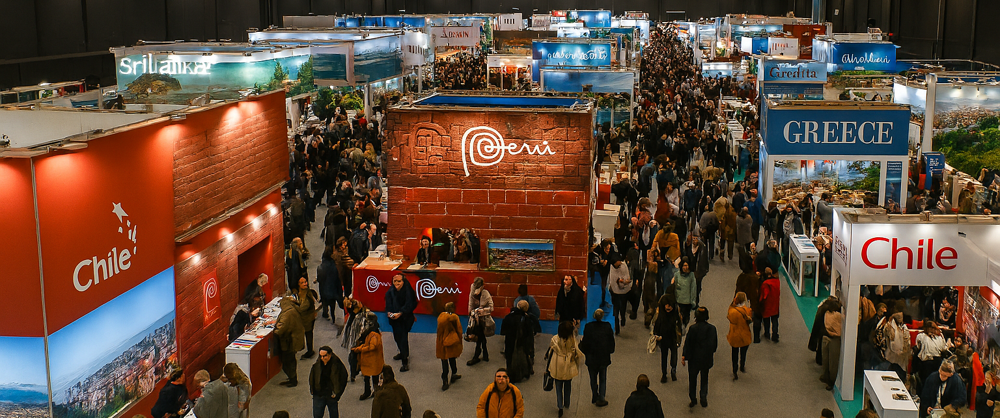
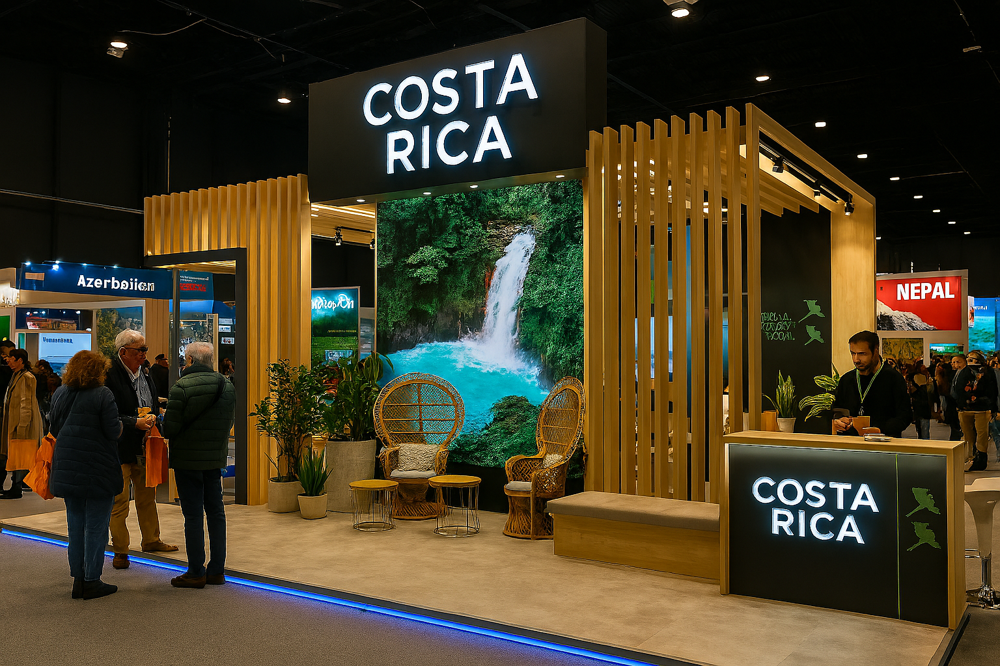
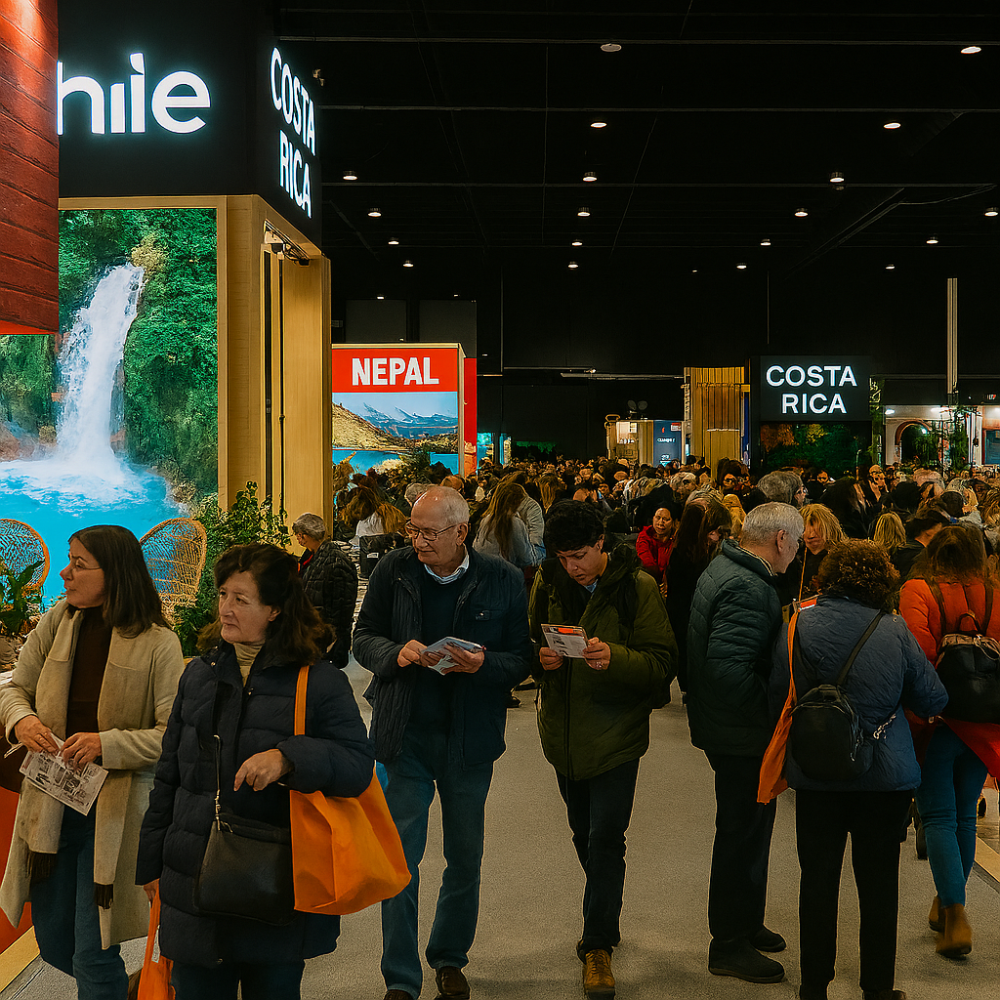
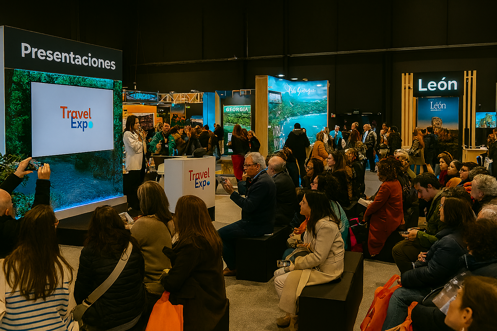

Bienvenidos a TravelBIRTLH 2025
TravelBIRTLH 2025 es la feria internacional de viajes más importante del año, donde profesionales del turismo, agencias de viajes y viajeros apasionados se reúnen para descubrir los destinos más fascinantes del mundo.
Durante tres días, tendrás la oportunidad de explorar ofertas exclusivas, conocer nuevos destinos, participar en conferencias especializadas y conectar con los mejores profesionales del sector turístico.
Información General del Evento
- Fechas: 18 de Octubre de 2025
- Horario: 9:30 - 19:00 horas
- Ubicación: BEC: Bilbao Exhibition Centre
- Entrada: Gratuita con registro previo
- Idiomas: Español, inglés, francés y alemán
¿Por qué visitar TravelBIRTLH 2025?
- Ofertas exclusivas: Descuentos especiales solo disponibles durante la feria
- Destinos únicos: Conoce lugares que no encontrarás en las guías tradicionales
- Expertos en turismo: Consulta directamente con profesionales especializados
- Conferencias gratuitas: Aprende sobre tendencias y consejos de viaje
- Networking: Conecta con otros viajeros y profesionales del sector
Enlaces de Interés
- Organización Mundial del Turismo (OMT)
- Asociación Internacional de Transporte Aéreo (IATA)
- Consejo Mundial de Viajes y Turismo (WTTC)
Galería de Imágenes


